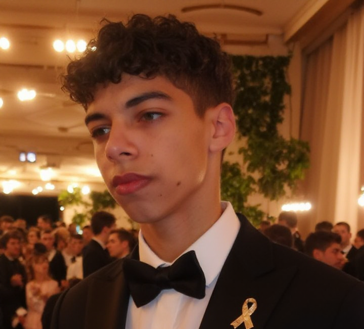
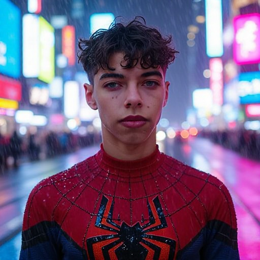
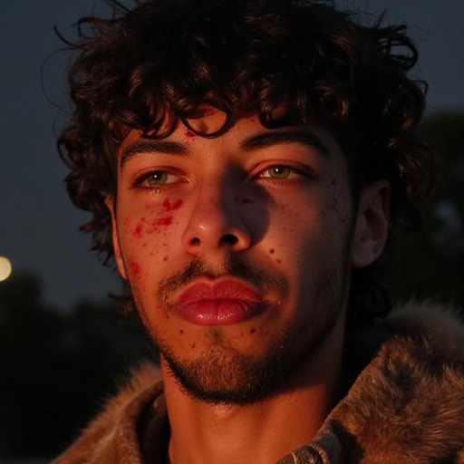
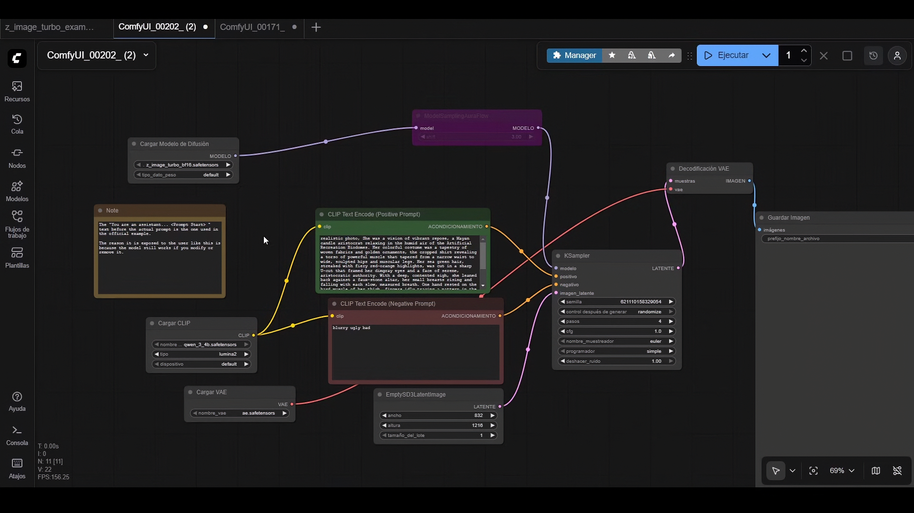
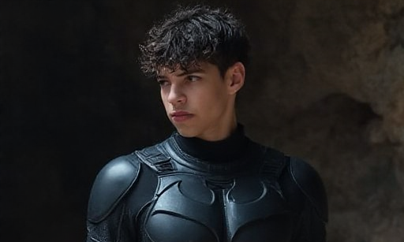

Adnane El Kraimi
Aspiring Software Developer
Ich bin Adnane El Kraimi. Nach meinem Abitur in Spanien habe ich mich dazu entschlossen, ohne jegliche Deutschkenntnisse nach Deutschland zu ziehen, um meinen Traum zu verfolgen: Eine Führungsposition in einem IT-Unternehmen zu bekleiden, mein eigenes Team zu leiten und internationale Projekte zu steuern. Um dieses Ziel zu erreichen, bleibe ich ständig in Bewegung. In den 18 Monaten, die ich bereits hier bin, habe ich nicht nur Deutsch bis zum C1-Niveau gelernt, sondern mir parallel dazu fundiertes Wissen über die Technologiewelt angeeignet. Ich halte mich kontinuierlich über Neuigkeiten in den Bereichen Programmierung, Frameworks, Künstliche Intelligenz, neue Arbeitswerkzeuge und Geschäftsmodelle auf dem Laufenden. Mein Interesse an der IT wurde bereits im Alter von 10 Jahren geweckt, als ich meinen alten Laptop nur mithilfe von YouTube Tutorials auf Windows 10 aktualisierte, ein Erlebnis, das meine Leidenschaft entfacht hat, der ich mich heute jeden Tag widme.

Sprachen
- Spanisch: Muttersprache
- Katalanisch: Muttersprache
- Deutsch:C1 (in Bearbeitung)
- Englisch:C1
Eigenprojekte
-

-

-

-

-


-

-

KI-basierter Bildgenerator mit lokal trainiertem LoRA für personalisierte Bildgenerierung
Ich habe auf meinem eigenen Laptop (RTX 4060 8Gb VRAM) ein LoRA-Modell mit OneTrainer auf Basis von Bildern meines Gesichts trainiert. Das Modell wurde anschließend in Flux integriert und über ComfyUI genutzt, um realistische KI-Bilder mit meinem eigenen Gesicht zu generieren. Dabei habe ich mich mit dem Training von KI-Modellen, Workflow-Integration und lokaler GPU-Nutzung beschäftigt.

Arduino-Projekt
Dieses Projekt besteht aus einem intelligenten Beleuchtungssystem, das mit Arduino entwickelt wurde. Die Helligkeit einer LED wird über ein Potentiometer gesteuert: Je stärker der Drehregler gedreht wird, desto heller leuchtet die LED.
Berufserfahrung
Verkäufer
Bäcker Dries Rheingau
Nachdem ich mein B1-Zertifikat erreicht hatte, entschied ich mich bewusst, praktische Arbeitserfahrung zu sammeln, um meine Deutschkenntnisse im Alltag zu vertiefen und gleichzeitig die deutsche Arbeitskultur kennenzulernen. Durch meine Teilzeitarbeit konnte ich insbesondere meine Disziplin, Belastbarkeit und Kommunikationsfähigkeit deutlich verbessern.
Verkäufer
Backhaus Schröer
Nach meiner B2-Prüfung entschied ich mich, wieder in Vollzeit zu arbeiten, um Rücklagen für einen potenziellen Umzug zu bilden, falls meine Ausbildung dies erfordert. Ich blieb bewusst im Bäckereisektor, da mein Arbeitstag dort bereits um 12 Uhr mittags endet. Das gibt mir die Freiheit, den restlichen Tag für das Studium an spezialisierten Schulen zu nutzen. Zudem wurde mir aufgrund meiner Erfahrung eine Position mit mehr Verantwortung angeboten, was mir ermöglichte, mein Gehalt zu steigern.